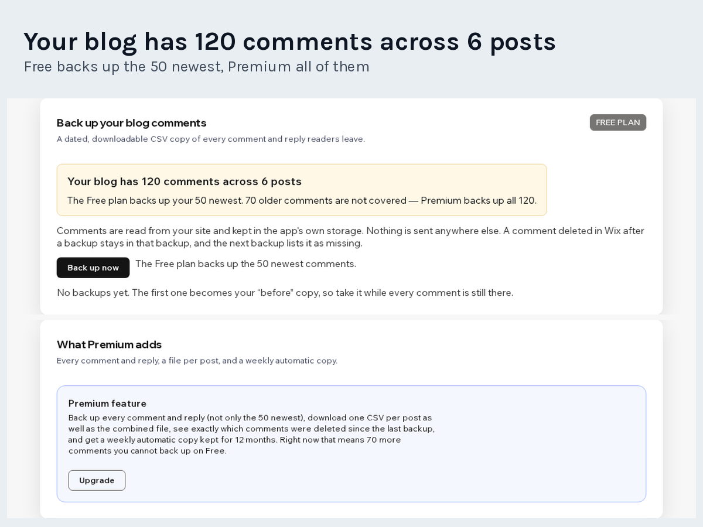

Comment Vault: Comments Backup
Every blog comment and reply in a dated CSV
- Every comment and reply, linked to its parent
- A dated CSV with post titles, authors and dates
- Free backs up the 50 newest comments
- Premium adds a file per post and a weekly copy

What it does
Blog comments are a record of your readers' conversations, and there is no built-in button that takes them out of your site. This app reads every comment and reply and keeps dated copies you can download as a spreadsheet.
Open the app and it shows how many comments your blog holds across how many posts. Press Back up now and it saves a dated CSV file with the post title, author, status, comment text, reply parent, rating and dates for every row, so a conversation stays readable after the backup leaves your site.
On the free plan you can back up the 50 newest comments and keep two backups. Premium backs up every comment and reply, keeps twelve months of history, offers one CSV per post as well as the combined file, and lists the comments that disappeared since the previous backup. A weekly automatic copy is taken the first time you open the app after seven days.
Comments are read from your site and kept in the app's own storage. Nothing is sent anywhere else. A comment deleted later stays in the backup you already took.
Premium is $5 a month, or $48 a year.
Price
Free
Premium
$5/month, $48/year
- Every comment and reply
- One CSV per post, plus the combined file
- Deleted-since list and 12 months of history
- A weekly automatic copy